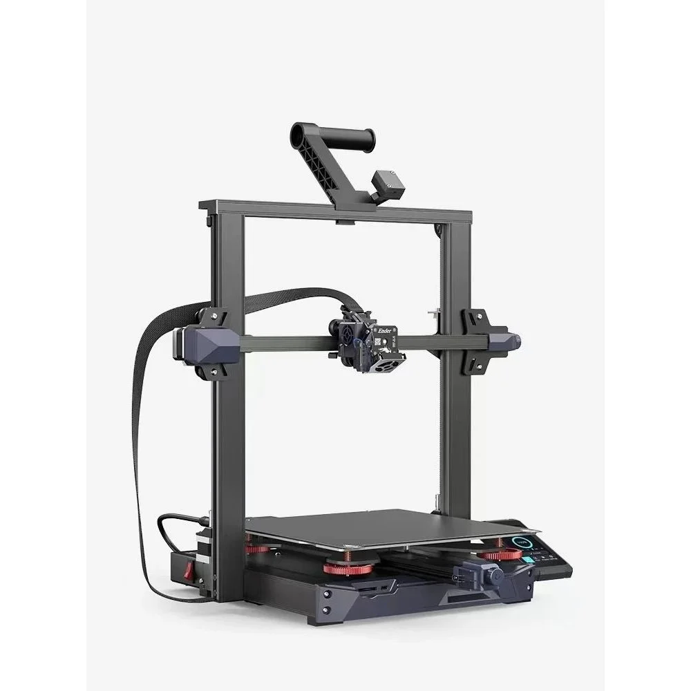

Hamza Deniz Yılmaz
3D Yazıcı nedir?

3D yazıcılar, üç boyutlu nesneleri katman katman oluşturabilen bir dijital cihazdır. Bu teknoloji, özellikle son yıllarda gelişmeler göstererek, pek çok endüstriyel uygulamada kullanılmaktadır. Bu yazıda, 3D yazıcıların nasıl çalıştığı, tarihçeleri, kullanım alanları, avantajları ve dezavantajları hakkında detaylı bir inceleme yapacağız.
3D Yazıcının Tarihçesi
3D yazıcıların tarihçesi oldukça uzundur. İlk 3D yazıcı 1986 yılında Charles Hull tarafından icat edildi. Hull, stereolitografi olarak adlandırdığı bir süreçle katman katman nesneler oluşturmayı başardı. O zamandan beri, pek çok farklı 3D yazıcı teknolojisi geliştirilmiştir.
3D Yazıcının Çalışma Prensibi
3D yazıcılar, çeşitli teknolojiler kullanarak nesneleri oluşturur. Bunlar arasında Fused Deposition Modeling (FDM), Stereolitografi (SLA), Selektif Lazer Sinterleme (SLS), Elektron Işın Erimesi (EBM) ve Lazer Metal Eritme (DMLS) bulunur. Bu teknolojilerin hepsi, farklı şekillerde malzemeleri eriterek veya sertleştirerek nesneleri oluşturur. 3D yazıcılar, dijital bir 3D modeli okuyan bir bilgisayar programı kullanarak, katman katman nesneler oluşturur. Bu model, birkaç farklı dosya formatında kaydedilebilir ve birçok farklı 3D modelleme yazılımı ile oluşturulabilir. FDM teknolojisi, bir polimer telin ısıtılması ve nesneyi oluşturmak için katman katman yerleştirilmesi ile çalışır. SLA teknolojisi ise, sıvı reçineyi ultraviyole ışınlarıyla sertleştirerek nesneleri oluşturur. SLS teknolojisi, bir lazer ışını kullanarak toz malzemeleri sertleştirerek nesneleri oluşturur. EBM teknolojisi, metalleri eriterek nesneleri oluştururken, DMLS teknolojisi, lazer ışını kullanarak metalleri eriterek nesneleri oluşturur.
3D Yazıcının Kullanım Alanları
3D yazıcılar, pek çok farklı endüstride kullanılmaktadır. Bu endüstriler arasında otomotiv, havacılık, tıp, mühendislik, moda ve mimarlık bulunur. Otomotiv endüstrisinde, 3D yazıcılar prototiplerin oluşturulmasına yardımcı olurken, havacılık endüstrisinde, 3D yazıcılar, hafif ve karmaşık parçaların üretilmesine olanak sağlar. Tıp endüstrisinde, 3D yazıcılar, biyo-yazdırma teknolojisi ile organlar ve dokuların üretilmesi gibi yenilikçi tedavilerin geliştirilmesine katkı sağlar. Mühendislikte, 3D yazıcılar, prototip oluşturma, ürün tasarımı, üretim hatlarına uygunluğun kontrolü gibi birçok alanda kullanılabilir. Moda endüstrisinde ise 3D yazıcılar, giysi ve aksesuarların üretilmesine yardımcı olurken, mimarlıkta ise, bina modellerinin üretilmesinde kullanılabilir.
3D Yazıcının Avantajları
3D yazıcılar, birçok avantajı beraberinde getirir. Bunların başında, tasarım ve üretim süreçlerinde esnekliği sağlaması gelir. 3D yazıcılar sayesinde, tasarım değişiklikleri hızlı bir şekilde yapılabildiği için üretim süreçleri hızlandırılır. Ayrıca, 3D yazıcılar, kısmi üretim ve kişiselleştirilmiş üretim olanakları sağlar. Bu sayede, küçük ölçekli üretimler ve kişiselleştirilmiş ürünler üretilebilir. Bunun yanında, 3D yazıcılar, malzeme kullanımında da tasarruf sağlar. Geleneksel üretim yöntemlerinde, fazla malzeme kullanımı sıkça görülürken, 3D yazıcılar, malzemeleri sadece nesnenin oluşturulmasında kullanır. Bu da, malzeme israfını minimize ederek, daha sürdürülebilir bir üretim süreci sağlar. Son olarak, 3D yazıcılar, üretim sürecinde insana gerek duymadan çalışabilir. Bu sayede, işgücü maliyetlerinden tasarruf edilebilir.
20/04/2023